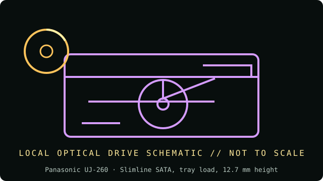

[ INDIVIDUAL COMPONENT // OPTICAL DRIVES ]
Panasonic UJ-260
Slimline SATA notebook Blu-ray writer; OEM mechanisms may ship with different bezel, firmware, and vendor-specific part suffixes. Specifications below are tied to the exact model identifiers and cited documentation; nearby product families may differ.

IDENTIFICATION: Panasonic UJ-260 · confirm full model/revision marking and compare it with the cited source before assigning a host or media capability.
Verified specifications
| Catalog subcategory | Blu-ray drives |
|---|---|
| Exact product identifier | Panasonic UJ-260 |
| Era / product type | Slimline 6× Blu-ray XL / DVD-RAM writer |
| Read/write and media | Writes BD-R up to 6× (BDXL TL/QL up to 4×), BD-RE up to 2×, DVD±R up to 8×, DVD±R DL up to 6×, DVD+RW up to 8×, DVD-RW up to 6×, DVD-RAM up to 5×, CD-R up to 24× and CD-RW up to 16×; reads BD-ROM up to 6×, DVD-ROM up to 8× and CD-ROM up to 24×. Confirm BDXL layer rates for the exact OEM revision. |
| Interface and mechanics | Slimline SATA, tray load, 12.7 mm height; approx. 128 × 129 × 12.7 mm. Internal notebook mechanism, not a 5.25-inch desktop drive. |
| Variant and host cautions | The UJ-260 is sold as an OEM mechanism. Confirm interface connector, 12.7-mm height, bezel/eject arrangement, firmware region and laptop BIOS/optical-caddy support. BDXL support should be confirmed from the exact OEM label/manual and media type rather than assumed from UJ-260 family listings. |
Optical-media preservation notes
Maintain the OEM drive label/firmware and source laptop context with preservation logs. Do not force a caddy or bezel from another slim optical model; verify any BDXL disc with a second compatible reader and checksum.
- Handle discs by the edge or center hub; do not write on the data side or add adhesive labels over the recording surface.
- Store in a clean, cool, dry, dark environment in protective cases. Keep original media unmodified and make verified working images for access.
- Retain checksums, drive model/firmware, software, read errors, media type, and acquisition/handling history with each preservation image.
Identification and host checks
- Confirm the complete manufacturer label, model suffix, revision, serial/date code, and supplied bezel, cable, adapter, or bracket before installation.
- The UJ-260 is sold as an OEM mechanism. Confirm interface connector, 12.7-mm height, bezel/eject arrangement, firmware region and laptop BIOS/optical-caddy support. BDXL support should be confirmed from the exact OEM label/manual and media type rather than assumed from UJ-260 family listings.
- Maintain the OEM drive label/firmware and source laptop context with preservation logs. Do not force a caddy or bezel from another slim optical model; verify any BDXL disc with a second compatible reader and checksum.
Manufacturer, standards and preservation sources
- Panasonic UJ-260 SATA slimline datasheetProduct-specific UJ-260 datasheet for SATA/slimline mechanics and disc speeds.
- OWC — Panasonic UJ-260 product listingModel identification and supported media family; OEM variant caution applies.
- Blu-ray Disc Association — format informationBlu-ray/BDXL format context; confirm exact layer support from drive data.
- NIST — Care and handling of CDs and DVDs: Guide for librarians and archivistsPreservation practice for optical discs; follow applicable media-specific guidance and keep redundant verified copies.
- Library of Congress — Sustainability of Digital FormatsFormat-sustainability reference for planning access, preservation, and migration of digital content.
Manufacturer ratings describe supported media and maximum speeds, not guaranteed read quality from a particular aged disc. Standards and preservation guidance do not certify this drive or a media batch.